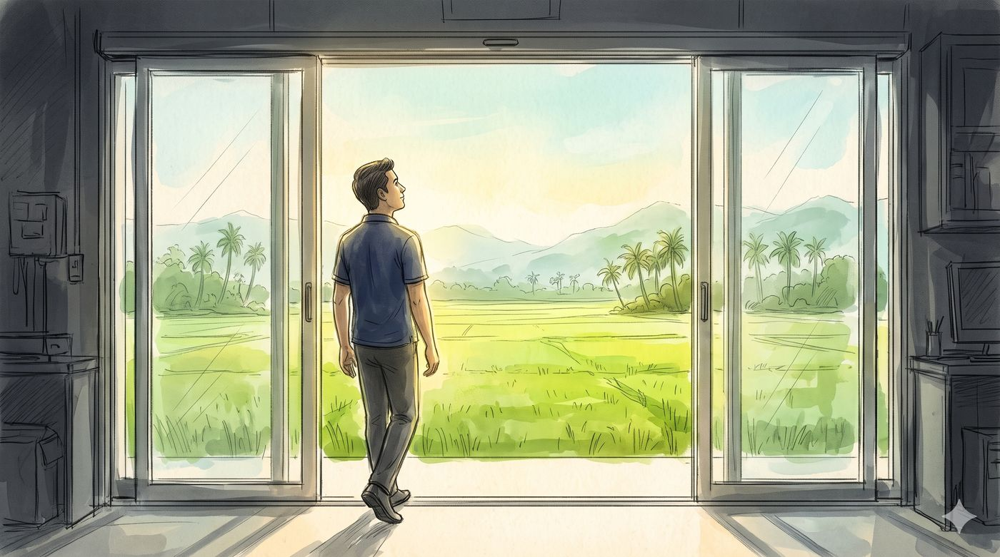

Arun and his best friend Karthik share a city flat and the same grind. Arun goes home to a world-class lab in Tenkasi; Karthik stays. Every lunch with Paati, every waterfall and every starry night reaches Karthik in colour on a grey phone call, and each one hurts a little more. Then the doors open for him too.
